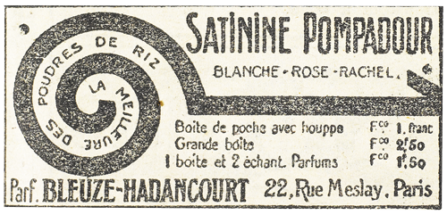

Les preuves s’ajoutaient aux preuves. Les événements se reliaient les uns aux autres comme les mailles d’une chaîne.
Empêtrée dans l’affaire Rousselin, et, par conséquent, recherchée par Beaumagnan, Josine n’avait pas manqué, elle aussi, de rôder aux environs du vieux phare. Aussitôt averti, Beaumagnan tentait son embuscade. Raoul y tombait. Au tour de Josine maintenant…
On eût dit que le destin voulait donner une confirmation à la suite des idées qui se succédaient dans l’esprit de Raoul. À la seconde même où il concluait, le bruit d’une voiture monta de la route qui longe le canal, au-dessous des falaises, et, instantanément, Raoul reconnut le pas précipité des petits chevaux de Léonard.
Beaumagnan, de son côté, devait savoir à quoi s’en tenir, car il se releva d’un mouvement et prêta l’oreille.
Le bruit des sabots cessa, puis reprit, moins rapide. La voiture escaladait un raidillon rocailleux qui grimpe vers le plateau, et d’où se détache la sente forestière, impraticable aux voitures, qui franchit les escarpements du vieux phare.
Dans cinq minutes, tout au plus, Joséphine Balsamo apparaîtrait.
Chaque seconde de chacune des minutes solennelles accrut l’agitation et le délire de Beaumagnan. Il bégayait des syllabes incohérentes. Son masque d’acteur romantique se déformait jusqu’à donner une impression de laideur bestiale. L’instinct, la volonté du meurtre tordaient ses traits, et, tout à coup, il fut visible que cette volonté, que cet instinct de sauvage se portait contre Raoul, contre l’amant de Joséphine Balsamo.
De nouveau les jambes se levaient mécaniquement pour frapper le carrelage. Il marchait à son insu, et il allait tuer à son insu, comme un homme ivre. Ses bras se raidissaient. Ses poings crispés avançaient ainsi que deux béliers qu’une force lente, continue, irrésistible, eût poussés jusqu’à la poitrine du jeune homme. Encore quelques pas, et Raoul basculait dans le vide.
Raoul ferma les yeux. Pourtant il ne se résignait point et cherchait à conserver quelque espoir.
« La corde cassera, pensait-il, et il y aura de la mousse sur les pierres qui me recevront. En vérité, la destinée du sieur Arsène Lupin d’Andrésy n’est pas d’être pendu. Si, à mon âge, je n’ai pas la chance de me tirer d’aventures de ce genre, c’est que les dieux, jusqu’ici favorables, n’ont plus l’intention de s’occuper de moi ! En ce cas, aucun regret ! »
Il songea à son père et à l’enseignement de gymnastique et de voltige qu’il tenait de Théophraste Lupin… Il murmura le nom de Clarisse…
Cependant le choc ne se produisait pas. Bien qu’il sentît contre lui la présence même de Beaumagnan, il semblait que l’élan de l’adversaire fût arrêté.
Raoul releva les paupières. Beaumagnan, tout droit, le dominait de sa haute taille. Mais il ne bougeait point, ses bras étaient repliés, et, sur son visage, où l’idée de meurtre imprimait une grimace abominable, la décision semblait comme suspendue.
Raoul écouta et n’entendit rien. Mais peut-être Beaumagnan, dont les sens étaient surexcités, entendait-il l’approche de Joséphine Balsamo ? De fait, il reculait pas à pas, et soudain, se précipitant, il reprit son poste dans le renfoncement, à droite de la porte.
Raoul le voyait en pleine face. Il était hideux. Un chasseur à l’affût épaule son fusil et recommence plusieurs fois ce geste pour être à même de l’exécuter à l’instant voulu. Ainsi, chez Beaumagnan, les mains s’apprêtaient convulsivement au crime. Elles s’ouvraient pour l’étranglement, se mettaient à distance convenable l’une de l’autre, crispaient leurs doigts recourbés comme des griffes.
Raoul fut épouvanté. Son impuissance était une chose terrible, dont il souffrait jusqu’au martyre.
Bien qu’il sût la vanité de tout effort, il se débattait pour rompre ses liens. Ah ! s’il avait pu crier ! Mais le bâillon étouffait ses cris, et les liens lui coupaient la chair.
Dehors, dans le grand silence, un bruit de pas. La barrière grinça. Une jupe froissa les feuilles. Des cailloux remuèrent.
Beaumagnan, aplati contre le mur, leva les coudes. Ses mains, qui tremblaient comme des mains de squelette qu’agite le vent, avaient l’air, déjà, de se fermer autour d’un cou et de le tenir, tout vivant, tout palpitant.
Raoul hurla derrière son bâillon.
Et puis la porte fut poussée, et le drame eu lieu.
Il eut lieu exactement de la façon que Beaumagnan l’avait conçu et que Raoul se l’était imaginé. Une silhouette de femme, qui était celle de Joséphine Balsamo, apparut et s’écrasa aussitôt sous la ruée de Beaumagnan. Une faible plainte, tout au plus, fut exhalée, que couvrit une sorte d’aboiement furieux qui haletait dans la gorge de l’assassin.
Raoul trépignait : jamais il n’avait autant aimé Josine qu’à la minute où il se la représentait agonisante. Ses fautes, ses crimes ? Qu’importait ! elle était la plus belle créature qui fût au monde, et toute cette beauté, ce sourire adorable, ce corps charmant fait pour les caresses, allaient être anéantis. Aucun secours possible. Aucune force contre la force irrésistible de cette brute.
Ce qui sauva Joséphine Balsamo, ce fut l’excès même d’un amour que la mort seule pouvait assouvir et qui, à la dernière seconde, ne put achever la sinistre besogne. À bout d’énergie, terrassé par un désespoir qui prenait tout à coup des allures de folie, Beaumagnan se roula sur le sol en s’arrachant les cheveux et en se cognant la tête au carrelage.
Raoul enfin respira. Quelles que fussent les apparences, et quoique Joséphine Balsamo ne remuât pas, il était certain qu’elle vivait. En effet, lentement, sortant de l’horrible cauchemar, elle se releva, avec des intermittences de détresse qui semblaient la briser, et enfin se dressa, bien d’aplomb et paisible.
Elle était vêtue d’un manteau à pèlerine qui l’enveloppait, et coiffée d’une toque d’où pendait un voile à grosses fleurs brodées. Elle laissa tomber son manteau, découvrant ainsi ses épaules dans l’échancrure du corsage que la lutte avait déchiré.
Quant à la toque et au voile, froissés, également, elle les rejeta, et la chevelure, délivrée, s’épanouit de chaque côté du front en boucles lourdes et régulières où s’allumaient des reflets fauves. Ses joues étaient plus roses, ses yeux plus brillants.
Un long moment de silence s’ensuivit. Les deux hommes la contemplaient éperdument, non plus comme si elle était une ennemie, ou une maîtresse, ou une victime, mais simplement une femme radieuse dont ils subissaient la fascination et l’enchantement. Raoul tout ému, Beaumagnan immobile et prosterné, admiraient tous deux avec la même ferveur.
Elle porta d’abord à sa bouche un petit sifflet de métal que Raoul connaissait bien, Léonard devait veiller à quelque distance et accourrait aussitôt à son appel. Mais elle se ravisa. Pourquoi le faire venir alors qu’elle demeurait maîtresse absolue des événements ?
Elle se dirigea vers Raoul, dénoua le foulard qui le bâillonnait, et lui dit.
– Tu n’es pas revenu, Raoul, comme je le croyais. Tu reviendras ?
S’il avait été libre, il l’eût serrée ardemment contre lui. Mais pourquoi ne coupait-elle pas ses liens ? Quelle pensée secrète l’en empêchait ?
Il affirma :
– Non… C’est fini.
Elle se haussa un peu sur la pointe des pieds et colla ses lèvres aux siennes en murmurant :
– Fini entre nous deux ? Tu es fou, mon Raoul !
Beaumagnan avait tressauté et s’avançait, mis hors de lui par cette caresse imprévue. Comme il essayait de lui saisir le bras, elle se retourna, et soudain le calme qu’elle avait conservé jusqu’ici fit place aux sentiments réels qui la secouaient, sentiments d’exécration et de rancune farouche contre Beaumagnan.
Elle éclata d’un coup, avec une véhémence dont Raoul ne la jugeait pas capable.
– Ne me touche pas, misérable. Et ne crois pas que j’aie peur de toi. Tu es seul aujourd’hui, et j’ai bien vu tout à l’heure que tu n’oserais jamais me tuer. Tu n’es qu’un lâche. Tes mains tremblaient. Mes mains ne trembleront pas, Beaumagnan, lorsque l’heure sera venue.
Il reculait devant ses imprécations et ses menaces, et Joséphine Balsamo continuait, dans une crise de haine :
– Mais ton heure n’est pas venue. Tu n’as pas assez souffert… Tu ne souffrais même pas, puisque tu me croyais morte. Ton supplice maintenant, ce sera de savoir que je vis et que j’aime.
« Oui, tu entends, j’aime Raoul. Je l’ai aimé d’abord pour me venger de toi et te le dire plus tard, et je l’aime aujourd’hui sans raison, parce que c’est lui, et que je ne peux plus l’oublier. À peine, s’il le sait, à peine si je le savais, moi. Mais depuis quelques jours, comme il me fuyait, j’ai senti qu’il était toute ma vie. J’ignorais l’amour, et l’amour c’est cela, c’est cette frénésie qui m’agite. »